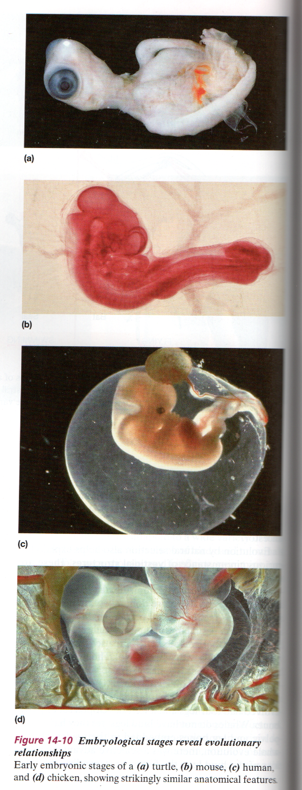

| Feature Article - June 2006 |
| by Do-While Jones |
Like the mythical Phoenix bird, evo devo rises from the ashes of the Biogenetic Law to try to save the theory of evolution; but it just won't fly.
Last month we didn't address Sean Carroll's Playboy article on evo devo because our "six page newsletter" was already ten pages long. We only addressed the other five essays in Playboy's set of six articles on evolution. This really got Argumentative Alex all riled up! In a very long, angry, email, Alex wrote:
|
Then, when you waste a whole article on criticism of essays by such respected authorities on evolution as Lewis Black and Kurt Vonnegut in that well known peer-reviewed journal Playboy, words fail me (if only!). |
That was exactly our point last month. Playboy considers Lewis Black qualified to write about evolution! We also pointed out last month that those five "respected authorities" did not present any scientific arguments in favor of evolution. They all based their arguments on their hatred of religion in general, and Christianity in particular. We believe this is significant.
Only one of the six Playboy articles had any scientific basis, and we promised to address that one this month. We are keeping our promise (even though it means our "six page newsletter" will run eight pages this month).
Sean B. Carroll is the author of Endless Forms Most Beautiful: The New Science of Evo Devo and the Making of the Animal Kingdom. He really is a respected authority. 1 He tried to defend evolution using, in his words, "the new science of evo devo."
Before we begin our look at evo devo, we need to make one important point: Evo devo is NOT the same as the Biogenetic Law. But they are similar, are easily confused, and have some connection, so we need to discuss both so that you will know the difference.
The Biogenetic Law once was "proof" of evolution based on the study of embryonic development. In 1993, evolutionist Richard Milner wrote,
|
... Haeckel's "Biogenetic Law": Ontogeny recapitulates phylogeny. That famous phrase, memorized by generations of uncomprehending schoolchildren, means that the fetal development of an individual (ontogeny) is a speeded-up replay of millions of years of species evolution (phylogeny). In other words, a human embryo passes through various stages during its nine months in the womb; invertebrate; fish; amphibian; reptile; mammal; primate; ape; man. A fascinating concept, but the "law" is untrue and was rejected by biologists around 1900. Nevertheless, it has become embedded in many school courses and textbooks and continues to be taught. 2 |
Haeckel's proof of the law was based on a set of drawings showing embryonic development, in which it was clear that all embryos are nearly identical in their early stages of development. It was soon discovered that he just made the drawings up. But that didn't seem to matter. To some people, any evidence that supports evolution is good evidence, whether it is true or not.
In the 1990's, biology students were still being taught that embryos pass through identical stages of development, even though they don't. This disturbed embryologist Michael Richardson. Even though he is an evolutionist, he didn't think biology students should be taught lies. So, he did something about it.
|
Generations of biology students may have been misled by a famous set of drawings of embryos published 123 years ago by the German biologist Ernst Haeckel. They show vertebrate embryos of different animals passing through identical stages of development. But the impression they give, that the embryos are exactly alike, is wrong, says Michael Richardson, an embryologist at St. George's Hospital Medical School in London. He hopes once and for all to discredit Haeckel's work, first found to be flawed more than a century ago. Richardson had long held doubts about Haeckel's drawings because they didn't square with his understanding of the rates at which fish, reptiles, birds, and mammals develop their distinctive features. So he and his colleagues did their own comparative study, reexamining and photographing embryos roughly matched by species and age with those Haeckel drew. Lo and behold, the embryos "often looked surprisingly different," Richardson reports in the August [1997] issue of Anatomy and Embryology. 3 |
When Richardson published this (in a peer-reviewed journal), the fecal material really hit the fan. He had to send several letters to Science to assert that, even though Haeckel's drawings are fakes, and the Biogenetic Law is false, he believes evolution really is true.
Look at this from the evolutionists' point of view. Since they believe that the theory of evolution is undeniably true, it must certainly be true that all embryos follow the same developmental path because they all evolved from a common ancestor. If the embryos don't look exactly the same during development, that's just an anomaly. There are some embryos that do look similar, so photos of those particular ones can be included in biology textbooks because they are truly representative of what is really happening. That justifies inclusion of pictures of turtle, mouse, human, and chicken embryos in a modern college biology textbook with the caption, "Figure 14-10 Embryological stages reveal evolutionary relationships." 4
 |
|---|
Evolutionary development is so new there isn't even consensus as to how to spell it. We spell it "evo devo" because that's how Sean Carroll spells it. Others spell it "evo-devo" and "evodevo." We will limit ourselves to Sean Carroll's quotes about evo devo because he seems to be the leading authority in this area. (If he isn't, he certainly is the one with the best press agent. )
Evo devo has the same roots as the Biogenetic Law has. Specifically, if one starts with the assumption that all life evolved from a common ancestor, then the differences we see in the living things today must be due to differences in how they developed from that common ancestor. Therefore, it ought to be possible to trace the history of evolution through the development of living things. As Carroll puts it,
|
Development is intimately connected to the evolution of form because all changes in form arise through changes in development. 5 |
Evo devo starts with the assumption that once upon a time there was a living cell from which all life forms evolved. It doesn't worry about how amino acids combined to form proteins, and cell membranes, et cetera. It doesn't worry about how the first cell came to life. That's all just a given pre-condition that evo devo assumes to have already happened. Evo devo starts with the first living cell, which we have affectionately named, "Frankencell."
The new notion that evo devo brings to the theory of evolution is that Frankencell must have had some very sophisticated DNA. It didn't have a very short DNA molecule with just the minimum genes necessary for reproduction as most evolutionists have traditionally assumed. It had a veritable "tool kit" of genes that it could use to build all sorts of body plans and internal organs.
This is a dramatic departure from previous evolutionary theories. Most evolutionists believe that DNA gradually acquired information over millions of years through random mutations. Evo devo is based on the idea that almost all of the genetic information was there at the start. But we are getting ahead of the story. Let's let Sean Carroll develop the idea.
|
The first and perhaps most important lesson to be learned from evo devo is that looks are deceiving. ... Despite their great differences in appearance, all complex animals share a common tool kit of body-building genes. 6 |
This was surprising to biologists.
|
Biologists naturally assumed that different types of animals were genetically constructed in different ways. The greater the difference in appearance, the less the animal would have in common at the genetic level. 7 |
We have touched on this when we have talked about the DNA dilemma in past issues. When molecular biologists tried to create family relationships using the similarities in proteins or DNA, they often came up with family trees that differed greatly from the traditional family tree. This led to some sharp debate between paleontologists and molecular biologists.
Evo devo muddies the water even further. Consider eyes, for example. There are lots of different kinds of eyes in the animal kingdom. We know that genes contain the information for constructing eyes. Therefore, one would expect that closely related animals have closely related eye genes, which would result in similar eyes.
|
What has puzzled and intrigued biologists ever since Darwin is the variety of eye types in the animal kingdom. We and other vertebrates have camera-like eyes with a single lens. Flies, lobsters and other arthropods see through compound eyes made up of many eye units. Even though they are not close relatives of ours, octopuses and squid also have camera-type eyes, whereas their own close relatives, clams and scallops, have three kinds of eyes: camera, compound, and mirror-type. The great diversity of eyes was, for more than a century, thought to be the result of independent invention, from scratch, in various animal groups. But now we know that the genes for building eyes--that is, for making the kinds of light-sensing cells necessary for vision--are shared among all animals. Despite the vast differences in the structure and optical properties of eyes, their evolution has been based on a common set of genetic and cellular ingredients. Natural selection has not repeatedly forged eyes from scratch; different types of complex eyes have evolved many times from the simpler eyes of animal ancestors. 8 |
Actually, the variety of eye types intrigued biologists long before Darwin. Science did not begin with Darwin. Euclid knew about lenses. Did he think of them out of the clear blue sky, or did he study the lenses in animals? Many human "inventions" are merely just copies of capabilities that animals innately possess. The inventions of eyeglasses, telescopes, and microscopes no doubt were rooted in a study of animal eyes long before Darwin.
What started with Darwin was the futile attempt to figure out how eyes could have evolved by chance. The more the subject is studied, the more confusing it becomes. If eyes really did evolve gradually, they would have to have evolved independently in many different animals. Since it is incredible to believe that it happened by chance even once, it is much more incredible to believe that it happened multiple times. This is the problem that evolutionists have faced ever since Darwin's day.
Carroll claims that the solution to the eye dilemma is that all the genetic components for eyes were present in the common ancestor of all animals, just waiting to develop. Then, over millions of years, eyes accidentally developed in different ways in different animals. There are two obvious problems with this idea. First, there is no scientific explanation for how the genetic information for eyes could just magically appear in that first animal ancestor. Second, there is no scientific explanation for why this genetic information should develop so differently in different animals.
Evo devo doesn't solve the evolutionists' eye problems. It just suggests another fantastic solution. The only reason why this fantastic solution is given any consideration at all is because the previous explanations about natural selection causing light-sensitive spots to evolve into eyes don't stand up to scientific scrutiny.
When talking about eyes, Carroll mentions in passing that the octopus is a close relative to the clam. One can easily make the argument that two different kinds of dogs, collies and beagles for example, are close relatives. They are just two different varieties of the same species. Collies and beagles can interbreed because they are both dogs. The dog species happens to allow great variation in shape, but they all have the same internal organs. They have paws and fur, and all breeds do have a common ancestor. The American Kennel Club has records that document the exact relationship between some individual dogs, and presumably also breeds of dogs.
One could also argue (with slightly more difficulty) that horses and donkeys are closely related. They have the same general shapes, they have hooves, and can even successfully breed to produce mules. Mules are sterile, so horses and donkeys technically are not the same species; but one might reasonably argue that a horse is a mutant donkey, or a donkey is a mutant horse, because they are so similar.
But why would one say an octopus is closely related to a clam? Is it because their arms are so similar, or is it the nearly identical shape of their shells? Seriously, other than the lack of a backbone, it is hard to think of anything about an octopus that is very much like a clam. But it is the lack of a backbone that makes them closely related in the opinion of an evolutionist. The more you think about it, the sillier it is. Neither people nor lobsters have hooves. That doesn't make them closely related.
The theory of evolution demands that biologists construct evolutionary trees, and that every species has to be stuck on some branch or other. Sometimes the supposed relationships are pretty silly. Historically, the paleontologists created what seemed (to them) to be the most reasonable family tree. Then the microbiologists came along, and started looking at DNA, and created their own evolutionary trees. These trees sometimes don't match those of the paleontologists, and don't make any more sense than the traditional ones.
Grocery stores try to put related products close together to make them easier for the customer to find them; but if you have ever shopped at a different grocery store than you usually do, you probably have found it difficult to find some things. That's because someone might think all the chicken products belong together, but someone else might think canned chicken should be next to the canned tuna several aisles away from the frozen chicken breasts. Eggs are always near the butter, but why? Is it because chickens and cows both live on farms? Eggs are just very young chickens. Why shouldn't eggs be next to chicken drumsticks? Organization is in the eye of the beholder. There is no right or wrong organization. There are only organizations that are more useful than other ones in certain situations.
Evo devo is, figuratively speaking, the new stock clerk of evolution. From an evolutionary development point of view, things that develop in the same way are probably more closely related than things that develop in different ways. Therefore, the evolutionary tree they propose will be different from the traditional tree based on physical characteristics, and will be different from the newer, controversial proposals based on microbiological considerations (DNA, proteins, etc.)
As evo devo matures, there will be more arguments among evolutionists that not only are the evolutionary trees of the paleontologists wrong, but the evolutionary trees of the microbiologists are wrong, too. It will be fun to watch the arguments from the sidelines.
Evolutionists labor under the false assumption that all living things evolved from a common ancestor. Therefore, if one organizes all living things according to their evolutionary history, the fossils and the DNA and the developmental processes all ought to produce the same tree. If their premise were true, then their conclusion would be true. But all living things didn't evolve from a common ancestor, so the arbitrary classification criteria that different scientists use generate inconsistent evolutionary trees.
It is pleasantly ironic that Carroll likes to use the tool kit analogy. A tool kit is of value only to a craftsman. The notion of a craftsman may be uncomfortably close to the notion of a designer for many evolutionists. Imagine the plight of a biology teacher in Dover, Pennsylvania, trying to teach about evo devo! "This morning, students, we are going to learn that DNA is really a genetic tool kit, but the tools use themselves because there is no designer."
|
Because parts of the genetic tool kit are shared among most branches of the animal kingdom, they must date back to before the Cambrian explosion that marked the emergence of large, complex animal bodies more than 500 million years ago. Evo devo tells us that while we may expect "advanced" animals to require new genes, most body-building genes and many cell types already existed in animal ancestors long before most kinds of modern body forms and complex organs evolved. "Our ancestor was an animal which breathed water, had a swim bladder, a great swimming tail, an imperfect skull and undoubtedly was a hermaphrodite," Darwin once wrote to a close colleague. "Here is a pleasant genealogy for mankind." The discoveries of evo devo allow us to peer further into our origins to a deep ancestor that makes Darwin's beast seem sophisticated: That earlier animal was probably just a few millimeters in size, with tiny eye spots, and a miniscule brain. It looked like a mollusk or marine-worm larva. Be proud of your heritage. 9 |
Notice the dig about "heritage." This isn't about science--it is about the underlying philosophy. The theory of evolution is undirected and purposeless. Evolution does not have any goal, so there really aren't any "advanced" animals, because advancement implies progress toward a goal. The underlying philosophy of evolution is that there is no purpose to anything, including your life. You are of no more importance than a mollusk or a marine-worm larva.
The main point of the quote, however, is that even the most primitive animal had the genes to make eyes and a brain. The raw materials were always there. The tool kit was nearly full from the beginning.
|
Evo devo's second major lesson is that diversity and novelty aren't so much a matter of the tool kit's contents but, in Eric Clapton's words, in the way that you use it. 10 |
As a matter of fact, I did once see Eric Clapton in concert (Wednesday, May 27, 1998, at the Great Western Forum), and he used his guitar very well that night. Before he came out on stage, his guitar just stood there in the stand, doing nothing. If there is no guitarist, how does the guitar play itself? Clapton played the strings with purpose. If I had gone down on stage and played his guitar, it would not have sounded the same.
If evo devo's second major lesson is that how one uses the tools is more important than the tools that are available, that really seems to be more of an argument for intelligent design than for purposeless, undirected evolution.
Evolutionists think
|
New explanations of human evolution will come from the understanding of how our "old" genes, shared with other vertebrates and more distant animal relatives have learned new tricks to shape the aspects of our form, such as our impressively bigger brain. 11 |
That's not the lesson we need to learn. We don't need to teach our children new fairy tales. There is so much valuable information to learn, why waste time trying to fabricate an evolutionary history?
Despite its rather unfortunate name, evolutionary development could be one of the most important new branches of science. There is much to be learned from the study of how living things develop. The real benefit of evo devo will come as scientists discover, document, and catalog the developmental processes of a wide variety of different living things. What is it that triggers the development of arms and legs in humans only in the embryonic stage but, in starfish, at any time later in life when a limb is lost? If we knew that, think what we might be able to do for people who have lost limbs. But why stop there? Might we not be able to regenerate internal organs in people whose organs have been damaged by disease or accident?
Think about all the different ways living things develop. A kernel of corn sprouts into a stalk, which grows leaves, and later an ear full of kernels develops inside a shield of leaves. A butterfly lays an egg, which hatches into a caterpillar, which encloses itself in a cocoon, later to emerge as a butterfly able to lay more eggs. A frog lays an egg, which hatches as a tadpole, which develops into another frog. But a dog has puppies, which are just smaller versions of adult dogs--there is no dramatic development process. Each of these things matures in a different way. There is a lot to be learned from a study of the different paths of development to maturity.
Unfortunately, evolutionists are likely to miss the important lessons. Evolutionists want to compare developmental processes to create a mythical evolutionary history. Those creatures with the most similar developmental process must be the most closely related, and must have evolved from a common ancestor that used that same process.
Evolutionists will miss the important lessons because they tend not to ask, "Why?" Why does a caterpillar have to become a butterfly to reproduce? To an evolutionist, that's a stupid question because there is only one answer. It is the same as their answer to every other question. A caterpillar becomes a butterfly because of random chance and natural selection. Scientific inquiry stops right there. Any other answer would involve meaning, purpose, or intention. Any other answer would have philosophical implications that are far too frightening to consider.
Carroll's conclusion is
|
Evo devo demolishes the rhetoric of those who say complex structures and organisms cannot arise through the ordinary processes of development and evolution. 12 |
It does nothing of the kind. Evo devo tells us nothing about the origin of complex structures and organisms. It merely helps us understand how they develop.
Evo devo starts with the assumption that the genetic information for eyes, and just about everything else, was there at the beginning. The first living cell had a tool kit that could be used to create all kinds of different creatures. Some unknown, undirected, ordinary process used that tool kit to create all the various forms of life we see today. That's not science. That's faith.
The claim that the tool kit was there all along, is dangerously close to the creationists' position that all things were created in forms that were very similar to their current forms. The genetic tool kit suggests an intelligent designer who made some basic parts that could be assembled into various products. Reusable components are the holy grail that engineers have sought for decades.
Reusability, flexibility, and sophistication are not hallmarks of random chance. They are evidence of design. The discovery of these features in living things by evo devo argues more strongly for creation than evolution.
| Quick links to | |
|---|---|
| Science Against Evolution Home Page |
Back issues of Disclosure (our newsletter) |
| Web Site of the Month |
Topical Index |
Footnotes:
1
See his bio at http://www.hhmi.org/research/ investigators/carroll_bio.html.
2
Milner, The Encyclopedia of Evolution, 1993, "Biogenetic Law", page 44,
(Ev+)
3
Pennisi, Science, 5 September 1997, Vol. 277, "Haeckel's Embryos: Fraud Rediscovered", page 1435, https://www.science.org/doi/10.1126/science.277.5331.1435a
(Ev)
4
Audesirk & Audesirk, Biology, Life on Earth, Fifth edition, 1999, page 266
(Ev)
5
Carroll, Playboy, April 2006, "New Science", page 134
(Ev)
6
ibid.
7
ibid.
8
ibid.
9
ibid.
10
ibid.
11
ibid.
12
ibid.